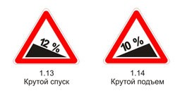

Прежде чем начать обгон, водитель обязан убедиться в том, что полоса движения, на которую он собирается выехать, свободна на достаточном для обгона расстоянии и в процессе обгона он не создаст опасности для движения и помех другим участникам дорожного движения.
Водителю запрещается выполнять обгон в случаях, если:
транспортное средство, движущееся впереди, производит обгон или объезд препятствия;
транспортное средство, движущееся впереди по той же полосе, подало сигнал поворота налево;
следующее за ним транспортное средство начало обгон;
по завершении обгона он не сможет, не создавая опасности для движения и помех обгоняемому транспортному средству, вернуться на ранее занимаемую полосу.
Обгон запрещен:
на регулируемых перекрестках, а также на нерегулируемых перекрестках при движении по дороге, не являющейся главной;
на пешеходных переходах;
на железнодорожных переездах и ближе чем за 100 метров перед ними;
на мостах, путепроводах, эстакадах и под ними, а также в тоннелях;
в конце подъема, на опасных поворотах и на других участках с ограниченной видимостью.
Опережение транспортных средств при проезде пешеходных переходов осуществляется с учетом требований пункта 14.2 Правил.
В случае если вне населенных пунктов обгон или опережение тихоходного транспортного средства, транспортного средства, перевозящего крупногабаритный груз, или транспортного средства, двигающегося со скоростью, не превышающей 30 км/ч, затруднены, водитель такого транспортного средства должен принять как можно правее, а при необходимости остановиться, чтобы пропустить следующие за ним транспортные средства.

В случае если встречный разъезд затруднен, водитель, на стороне которого имеется препятствие, должен уступить дорогу. Уступить дорогу при наличии препятствия на уклонах, обозначенных знаками 1.13 "Крутой спуск" и 1.14 "Крутой подъем", должен водитель транспортного средства, движущегося на спуск.